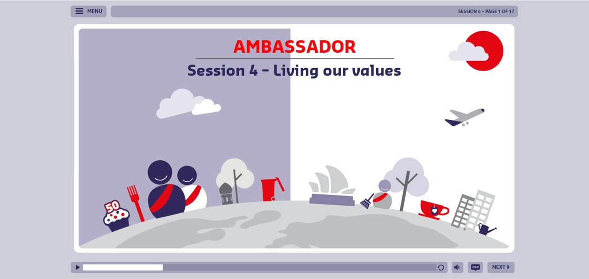
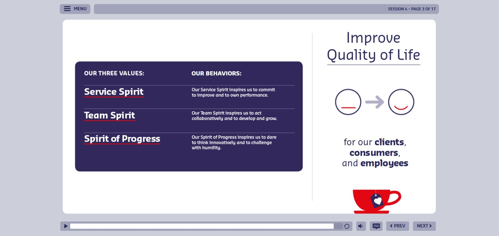
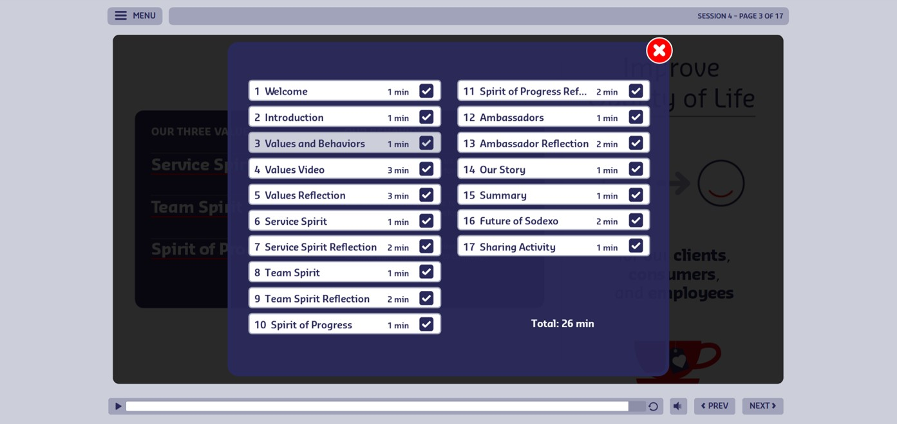
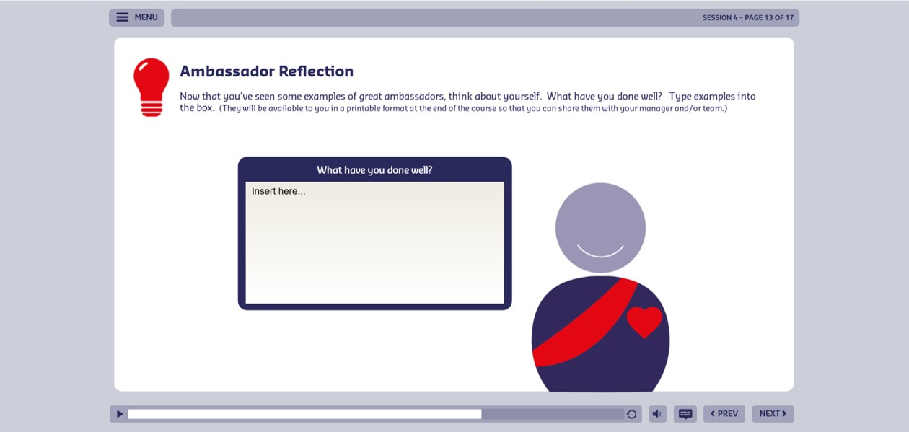
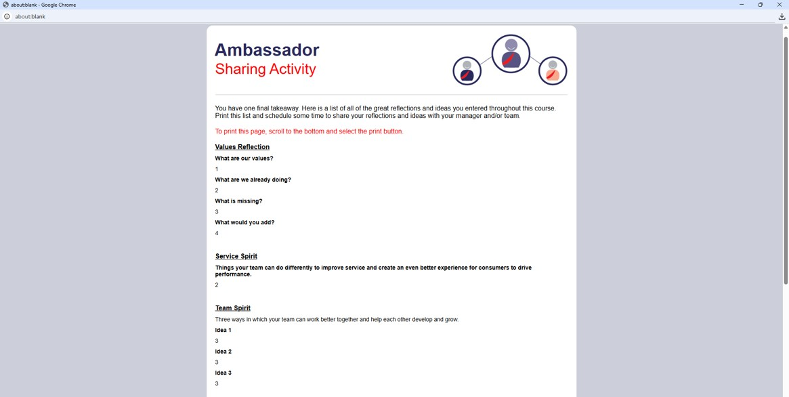

Case Study
eLearning Course
Turning a static company-values PDF into a narrated, animated Storyline course — one that closes by handing each learner a personalized, printable reflection built from their own answers.

The Challenge
A PDF resource with information and graphics about company values was the starting point. The challenge was to turn that source material into an engaging digital experience — not just a read-and-click-next course.
My Approach
I reviewed the source material and built a content outline, script, and storyboard that translated the information into a cohesive experience — planning where narration, animation, on-screen text, graphics, and reflection activities would work together to reinforce the key concepts.
I then designed a visual mockup for the overall UI/UX and used it as the foundation. The final course was developed in Articulate Storyline with a custom interface and interactive elements built to keep learners engaged.
Course Design & Learner Experience
The course paired voice-over narration with animated graphics and text timed to the narration. Rather than large blocks of text to read, it revealed information progressively and used movement and visual emphasis to support the spoken content.

The custom interface, designed from the mockup, set the course’s look and feel. I developed a custom menu that learners could open at any time to view a list of all course pages. Each page included a check mark to indicate completion. A Storyline variable controlled the completion state for each page, allowing the menu to function as both a navigation tool and a visual progress indicator.

Reflection & Personalized Output
After key content, the course posed reflection questions that asked learners to connect the concepts to their own work and behavior. Responses were typed into text boxes and stored in Storyline variables.

At the end, learners could review their reflections and print them — HTML and JavaScript generated a dynamic page that pulled the variable values in and formatted them for printing, turning the learner’s answers into a personalized take-away.

Technology & Development
Articulate Storyline
Primary platform — custom interface, navigation, variables, triggers, text-entry interactions, and progress functionality.
Custom UI / UX
A visual mockup and custom interface established the look and feel and kept the experience consistent.
Animation & Narration
Voice-over paired with animated graphics and timed text for a more engaging experience than read-and-click.
HTML + JavaScript
Generated a dynamic page from Storyline variable values, presenting the learner’s reflections in a print-ready format.
Business Impact
- Transformed static source material into a more engaging digital experience using narration, animation, custom interaction, and reflection.
- Created a custom Storyline interface with a distinctive look and clear navigation and progress visibility.
- Encouraged learners to connect company values to their own work through guided reflection questions.
- Produced a personalized end-of-course reflection output by passing Storyline variable values into a dynamic HTML page with JavaScript.
What I Learned
This project strengthened my ability to combine instructional design, visual design, Storyline development, animation, and custom web functionality into one cohesive experience — and showed how Storyline variables, triggers, HTML, and JavaScript can extend a course well past its usual limits.